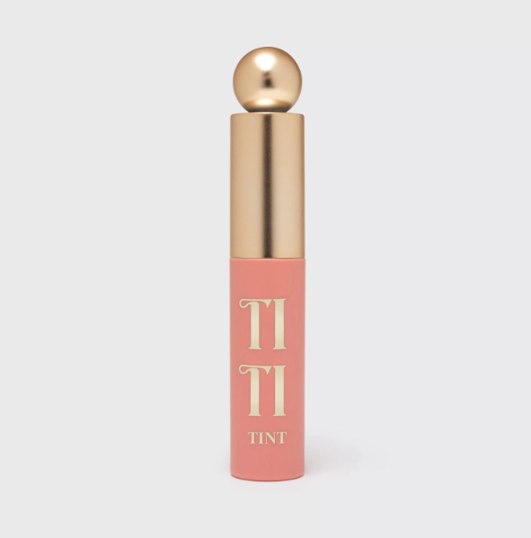

Cabaret
CABARET - настоящая легенда среди тушей! О ней говорят. Её любят. Её всегда узнают. Ведь с ее помощью можно создать бесподобный сценический макияж с акцентом на ресницы. Упругая пластиковая щеточка с зауженным кончиком позволяет равномерно распределить тушь по ресницам, разделяя их и придавая суперобъем!
Macaron
MACARON — румяна от VIVIENNE SABÓ в четырех оттенках с матовым финишем. Это сочетание нежности, легкости и натуральности
Brow Arcade
БЕЗУПРЕЧНЫЕ БРОВИ ЗА СЧИТАННЫЕ СЕКУНДЫ!! Идеальные брови – это не миф! С автоматическими карандашами BROW ARСADE приблизиться к идеалу стало просто.
Tititint
TITITINT — восемь тинтов от VIVIENNE SABÓ с совершенно новой инновационной текстурой. Они придают губам стойкий цвет, а также обеспечивают комфорт и увлажнение.
Nude Createur
Кто сказал, что нюд – это скучно? Новая помада Nude Créateur вдохновит тебя на творчество в ежедневном макияже! 20 восхитительных оттенков - от модных нюдовых до классического красного - стойко держатся на губах и подходят абсолютно всем. Ее пластичная кремовая текстура легко наносится, не растекается за контур, создает безупречное покрытие и идеально подходит для ежедневного использования. Nude Сréateur – твой манифест и твой инструмент поиска своего уникального образа.
Cabaret Première
Подводка-фломастер CABARET PREMIÈRE — это эффектные стрелки, которые не потеряют формы в течение всего дня! Благодаря тонкому конусообразному аппликатору фломастер рисует четкий контур и невероятно удобен в применении. Подводка не растекается, быстро фиксируется и не стягивает нежную кожу век. Современная упаковка air-tight предотвращает высыхание продукта.